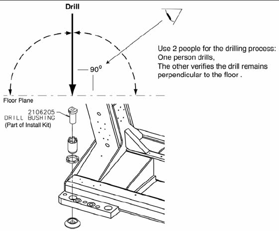
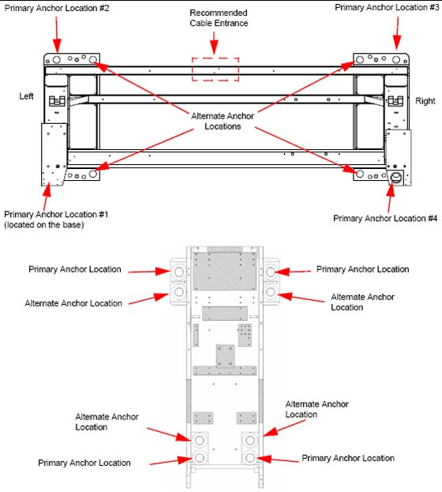

Operating Documentation
Direction 5193574-800, Rev# 22
LightSpeed 7.X Service Methods
Module Version 2.0, Version Date 6/28/11
Operating Documentation |
| Required Persons | Preliminary Reqs | Procedure | Finalization |
|---|---|---|---|
| 2 (FE or mechanical supplier) | Not Applicable | 30 mins | Not Applicable |
Notes to Mechanical Installers
Note 1: Basic Anchoring Information
GE-provided floor anchors are designed for use ONLY on concrete floors that meet the 102 mm (4 in.) concrete floor requirement. Supplied floor anchors must be installed by a trained contractor, and set to a minimum depth of 3 in. at each anchor point. ANY anchors having more than 21mm of thread showing above the nut when torque is set to 75 ± 6 N-m (55 ± 5 ft.-lb.), shall have a second anchor installed in the closest adjacent hole. This is because the minimum anchor engagement length in the concrete was not met. The second anchor shall be installed to the standard depth and torque specification. Do not cut anchor bolts that extend longer than the 1 in. limit.
Note 2: Alternate Anchoring
If at least four anchors cannot be set for the gantry, and at least four anchors for the table using the alternate anchor holes, then the installer must inform the PMI that the minimum anchoring cannot be met. Additionally, the customer’s structural engineering contractor must be engaged to determine the anchoring method, set the anchors, and certify that their anchoring meets the stated GE minimum load requirement and torque specification.
Note 3: Non-Concrete Floors
All other anchoring methods-on floor types other than the concrete minimum-must be determined at the customer's expense by a structural engineering contractor. The anchoring and method must be certified by the customer’s contractor to meet the stated GE minimum load requirement and torque specification.
Note 4: GE Notification
It is not the role of mechanical contractors or installers (FEs) to determine acceptable methods to install or anchor equipment on non-4 in. (102 mm) concrete floors. The PMI or appropriate GE contact person shall be notified that the facility's floor type DOES NOT MEET the installation mounting requirement for the installation procedure (described in this Installation Manual), and therefore the table-gantry mounting process CANNOT continue.
| Item | Qty | Effectivity | Part# | Manufacturer | |
|---|---|---|---|---|---|
| Standard Install Tool Kit | 1 | - | - | - | |
| Hammer Drill | 1 | - | - | - | |
| ½ in. x 12 in. Drill Bit (Metric equivalent must not be used) | 1 | - | - | - | |
| ½ in. Drill Bushing (shipped in install support kit) | 1 | - | - | - | |
| Vacuum with HEPA filter | 1 | - | - | - | |
| Vacuum Hole Attachment - to clean debris from the holes | 1 | - | - | - | |
| PPE | - | - | - | ||
| ||||
| POTENTIAL FOR PATIENT INJURY. | ||||
| IMPROPERLY SECURED TABLE MAY TIP, DISLODGING PATIENT. | ||||
| PROPER ANCHORING IS KEY TO MAINTAINING PATIENT SAFETY DURING SYSTEM OPERATION. |
| NOTE: | The gantry rear cover should still be removed and the table should still be on the dolly. |
Make sure that all table and gantry levelers (four each) are firmly on the concrete floor.
| ||||
| Potential for Equipment Damage from Dust To prevent damage due to the dust created during drilling, you must cover all electronic assemblies in the table base prior to drilling. | ||||
Locate the hammer drill and ½ in. X 12 in. drill bit. The ½ in. bit is used to drill all eight (8) table and gantry anchor holes. You must use the drilling bushing to drill all table and gantry holes. All primary holes can be drilled with the gantry front covers installed.
Use a piece of tape to mark the drill bit depth of 190 mm (7-1/2 in.) from the tip of the ½ in.masonry drill bit.
Use the ½ in. bit to drill all eight (8) anchor holes to a depth of 190 mm (7-1/2 in.), as measured from the top of the drill bushing. Review Illustration 1 and Illustration 2 prior to drilling.
Illustration 1: Drilling Position

Place appropriate protection to prevent damage and dust contamination to electronic assemblies.
Place the drill bushing inside each adjuster, to keep the hole vertical and centered within the adjuster.
Use the drill bushing to center the anchor holes in all adjuster locations, to provide maximum lateral alignment capacity when you center the cradle on isocenter during subsequent system testing.
Take care not to injure yourself on the gantry cover brackets.
Drill the holes perpendicular to the floor.
Important - Follow these guidelines when drilling anchor holes:
While one person drills the holes, position a second person to watch the relationship between the drill bit and floor. Make sure the bit remains absolutely perpendicular to the floor throughout the drilling operation.
Always use the mechanical guide when drilling.
Stop drilling every 15 or 20 seconds and clear the hole of debris. This lets the drill bit cool and helps to prevent binding of the drill bit.
Vacuum while drilling to keep gantry and table as free of dust contamination as possible. Place the funnel tip or long extension tip inside the hole.
A drywall dust filter must be used on the vacuum.
Drill each hole until the mark on the drill bit is even with the top of the drill bushing. All holes must be a minimum of 190 mm (7.5 in.) deep, as measured from the top of the adjuster to the bottom of the hole (see Table Base Anchor Assembly, in Installing the Anchors). Use an upside-down anchor to check the hole depth.
Recheck the depth of all holes by inserting an anchor backward into the hole. You should have 20 mm (3/4 in.) or less showing. Re-drill if needed.
When finished drilling and clearing the anchor holes, vacuum the debris from the inside of each of the holes and from the surrounding (floor) area.
Illustration 2: Anchor Locations

| NOTE: | If alternate location(s) are used to anchor the table or gantry, you must move the respective leveler(s) and pad(s) to the new alternate location(s) and re-drill. |
If you cannot use one of the adjuster anchor holes due to structural interference, such as reinforcement bars in the concrete, you must use one of the alternate anchor locations, as shown in Step . You must also move the respective leveler(s) and pad(s) to the new alternate location(s) and re-drill.
| ||||
| POTENTIAL FOR PATIENT INJURY. | ||||
| IMPROPERLY-SECURED TABLE MAY TIP, DISLODGING PATIENT. | ||||
| PROPER ANCHORING IS KEY TO MAINTAINING PATIENT SAFETY DURING SYSTEM OPERATION. |
Move the adjuster to the alternate anchor hole.
The gantry requires a minimum of four (4) anchors, one (1) in each corner.
The table requires a minimum of four (4) anchors, one (1) at location.
If you must use an alternate anchor hole in the gantry, you must remove the gantry covers to drill the holes. See appendix for gantry cover removal.
It is the purchaser's responsibility to provide an approved support structure and mounting method for all floor types other than those listed. General Electric is not responsible for any failure of the support structure or method of anchoring, including seismic requirements and/or through-bolting.
| NOTE: | GE is not responsible for anchoring methods other than those listed in the Pre-Installation Manual for this system. |
Provided floor anchors are designed for use ONLY on concrete floors that meet the 102 mm (4 in.) concrete floor requirements.
Table 1: Gantry and Table Mounting Requirements
| Mounting Requirements | Gantry | Table |
| Minimum Floor Thickness: | 102 mm (4 in.) | 102 mm (4 in.) |
| Recommended Drilling Depth: | 95 mm (3-¾ in.) | 95 mm (3-¾ in.) |
| Average Anchor Embedment: | 89 mm (3-½ in.) | 89 mm (3-½ in.) |
| Minimum Anchor Embedment: | 76 mm (3 in.) | 76 mm (3 in.) |
| Available Alternate Anchor Locations: | Yes | Yes |
| Shipped Anchor Size: | 203 mm (8 in.) | 203 mm (8 in.) |
| Alternate Anchoring Methods: | Yes (see notes, above) | Yes (see notes, above) |
| Floor Levelness Requirement: | 6 mm (0.25 in.) over 3 m (10 ft) | 6 mm (0.25 in.) over 3 m (10 ft) |
No finalization steps.